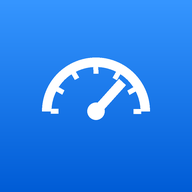

Tap any gauge for its graph. Pin more gauges to Home from there.
How each major part is holding up, judged from the van's own self-tests, trends across your drives, and the part ages you enter.
Grades are estimates to help you plan, not a guarantee. Self-test limits come from the engine computer itself. Trend warnings get more reliable after a couple of weeks of normal driving. Confirm with the troubleshooting steps or a mechanic before buying parts.
A summary for a mechanic or a buyer: trouble codes, the report card, and maintenance history. It only includes the VIN if you choose to.
Works without the adapter. Type any code from another scanner or a parts-store printout.
Reads new alerts out loud while you drive, such as "Warning. Bank 2 running lean." Each alert is spoken once and isn't repeated for 5 minutes. Critical alerts repeat every 2 minutes while they last.
Live readings are compared against normal ranges for this engine. A reading has to stay out of range for a few seconds before it is flagged.
Checking sends only the VIN to NHTSA, the US road safety agency, to look up the model and its recalls. Results are saved on this device so you can see them offline.
Self-tests the engine computer runs while you drive. After codes are cleared or the battery is disconnected they reset to "Not ready" and finish over a few days of normal driving.
Save your drive history, maintenance, code notes and settings to a file. Restore it on a new phone, or after clearing the browser's data, so nothing is lost. The demo van's simulated drives aren't included.
Keeps drive history, maintenance, the service log and code notes the same on your phone and laptop, through your own Google Drive. The copy goes into a hidden folder that only MyVan can open; it doesn't show up in your Drive. Units, appearance and other display settings stay separate on each device.
The OBD-II port has power even with the van off, so a plugged-in adapter always draws a little current. MyVan Assistant keeps that low:
An adapter that never sleeps can draw around 50 mA, enough to run a battery down over a few weeks of parking. If the van will sit for more than a week or two, unplug the adapter.
It talks to the van through the standard OBD-II port using an ELM327-compatible adapter. That covers the engine computer fully, plus the transmission's emissions-related codes.
Honda-only systems such as ABS/VSA, airbags, the body modules, tire pressure, Honda Sensing and detailed 10-speed transmission data use Honda's own protocols. Those need Honda's i-HDS software or a scanner that supports Honda enhanced data.
Other cars: live data, trouble codes and readiness monitors work on any gasoline car sold in the US from 1996 on. The normal ranges, warnings and troubleshooting steps are tuned for this van's 3.5L V6, so on a different engine some idle and airflow warnings may be wrong.
The troubleshooting steps here are general diagnostic guidance written for this engine. For exact specifications, wiring diagrams and pinpoint tests, use Honda's official service information at techinfo.honda.com, which sells short-term access. Each code has a notes box where you can keep what you find there.
MyVan Assistant version · your data stays on this device (recall checks send only the VIN to NHTSA)
Record a drive while a problem happens, then copy the readings as CSV for a spreadsheet or to share with your mechanic.